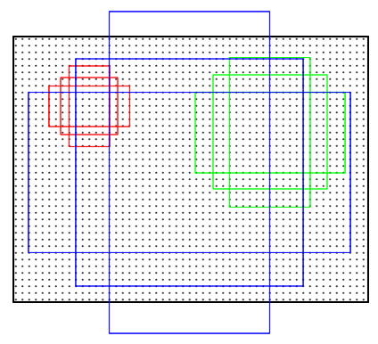

RPN(RegionProposal Network)
作用
- 输入：feature map
- 输出：一系列的矩形候选框(object proposals)
结构
e.g: conv feature map(13*13*256) -> sliding window(3*3) -> 卷积(3*3*256*256)
-> 256-d向量 -> 卷积(1*1*256*2k(cls) or 1*1*256*4k(reg)) -> cls layer / reg layer输出
Anchors

在sliding window中，以中心像素为基点构造9种anchor映射到原来的图像中：三种面积 * 三种比例
训练(Faster-RCNN中)
判定anchor内是否有目标的规则：
- 假如某anchor与任一目标区域的IoU最大，则该anchor判定为有目标；
- 假如某anchor与任一目标区域的IoU>0.7，则判定为有目标；
- 假如某anchor与任一目标区域的IoU<0.3，则判定为背景。所谓IoU，就是预测box和真实box的覆盖率，其值等于两个box的交集除以两个box的并集。其它的anchor不参与训练。
(摘自参考资料[1])
代价函数

代价函数分为两部分，对应着RPN两条支路，即目标与否的分类误差和bbox的回归误差，其中Leg(ti,ti) = R(ti-ti)采用在Fast-RCNN中提出的平滑L1函数，作者认为其比L2形式的误差更容易调节学习率。注意到回归误差中Leg与pi相乘，因此bbox回归只对包含目标的anchor计算误差。也就是说，如果anchor不包含目标，box输出位置无所谓。所以对于bbox的groundtruth，只考虑判定为有目标的anchor，并将其标注的坐标作为ground truth。此外，计算bbox误差时，不是比较四个角的坐标，而是tx，ty，tw，th，具体计算如下：
(摘自参考资料[1])
Fast R-CNN
结构
输入：RoI与图像 -> RoI映射到图片提取出的feature map上 -> 通过RoI pooling层使每个RoI得到固定尺寸的feature map
-> 通过全连接层得到feature vector -> 使用Multi-task Loss(分类:softmax,回归:smoothL1)进行联合训练
RoI pooling
由于region proposal的尺度各不相同，而期望提取出来的特征向量维度相同，因此需要某种特殊的技术来做保证。ROIPooling的提出便是为了解决这一问题的。其思路如下：
- 将region proposal划分为H×W大小的网格
- 对每一个网格做MaxPooling（即每一个网格对应一个输出值）
- 将所有输出值组合起来便形成固定大小为H×W的feature map
（摘自参考资料[4]）
[一张一目了然的动图](来自https://github.com/deepsense-ai/roi-pooling)
代价函数
与上文中代价函数基本一致（因为faster-RCNN实质上就是RPN + fast-RCNN）
FPN(Feature Pyramid Networks)
网络结构

可分为三个部分：
- 自下而上的卷积神经网络
- 自上而下过程
- 特征与特征之间的侧边连接
ResNet示例图
自底而上的路径
自下而上的路径是卷积网络的前馈计算，该算法计算由不同比例的特征映射组成的特征层级，其缩放步长为2。通常有许多层产生相同大小的输出映射，并且我们说这些层 处于相同的网络阶段。 对于我们的特征图金字塔，为每个阶段定义一个金字塔等级， 然后选择每个阶段的最后一层的输出作为我们特征图的参考集。 这种选择是自然的，因为每个阶段的最深层应具有最强的特征。
具体而言，对于ResNets，我们使用每个阶段的最后一个residual block输出的特征激活输出。 对于conv2，conv3，conv4和conv5输出，我们将这些最后residual block的输出表示为\{C2，C3，C4，C5\}，并且它们相对于输入图像具有\{4, 8, 16, 32\} 的步长。 由于其庞大的内存占用，我们不会将conv1纳入金字塔中。
自顶向下的路径
自顶向下的路径通过对在空间上更抽象但语义更强高层特征图进行上采样来幻化高分辨率的特征。随后通过侧向连接从底向上的路径，使得高层特征得到增强。每个横向连接自底向上路径和自顶向下路径的特征图具有相同的尺寸。将低分辨率的特征图做2倍上采样（为了简单起见，使用最近邻上采样）。然后通过按元素相加，将上采样映射与相应的自底而上映射合并。这个过程是迭代的，直到生成最终的分辨率图。
为了开始迭代，我们只需在C5上附加一个1×1卷积层来生成低分辨率图P5。最后，我们在每个合并的图上附加一个3×3卷积来生成最终的特征映射，这是为了减少上采样的混叠效应。这个最终的特征映射集称为\{P2，P3，P4，P5\}，分别对应于\{C2，C3，C4，C5\}，它们具有相同的尺寸。
由于金字塔的所有层次都像传统的特征化图像金字塔一样使用共享分类器/回归器，因此我们在所有特征图中固定特征维度（通道数，记为d）。我们在本文中设置d = 256，因此所有额外的卷积层都有256个通道的输出。
中间连接
采用1×1的卷积核进行连接（减少特征图数量）。
（以上结构知识摘自参考资料[5]）
Mask R-CNN
网络结构
强化基础网络
使用ResNet + FPN来做特征提取，从而达到state-of-the-art的效果。
ResNet特征表达能力较之前faster-RCNN中使用的vgg网络更强，而FPN网络则能够提供多尺度的特征信息。
RoIAlign
使用RoI Pooling时，由于对小数的量化会产生像素的偏差，即“不匹配问题”(misalignment)。
如上图所示，这是一个Faster-RCNN检测框架。输入一张800*800的图片，图片上有一个665*665的包围框(框着一只狗)。图片经过主干网络提取特征后，特征图缩放步长（stride）为32。因此，图像和包围框的边长都是输入时的1/32。800正好可以被32整除变为25。但665除以32以后得到20.78，带有小数，于是ROI Pooling 直接将它量化成20。接下来需要把框内的特征池化7*7的大小，因此将上述包围框平均分割成7*7个矩形区域。显然，每个矩形区域的边长为2.86，又含有小数。于是ROI Pooling 再次把它量化到2。经过这两次量化，候选区域已经出现了较明显的偏差（如图中绿色部分所示）。更重要的是，该层特征图上0.1个像素的偏差，缩放到原图就是3.2个像素。那么0.8的偏差，在原图上就是接近30个像素点的差别，这一差别不容小觑。
（摘自参考资料[6]）
如上图，RoIAlign的不同之处在于，不进行取整操作，而是保留小数，最后采用平分后取中心点位置的方法。中心点未知的像素采用双线性插值法进行计算（如下图中红叉位置）。
最后，取四个红叉像素值中最大值作为一个小区域的像素值，如此类推，得到feature map。
代价函数
Lcls、Lbox两项沿用Fast-RCNN中的定义。Mask分支中，对于每个RoI（K类，分辨率为m*m）有K*m^2维的输出。对每个像素应用sigmoid函数，并定义Lmask为平均二值交叉熵。
对于一个对应于class k的RoI，只有第k个mask输出决定Lmask，其他mask的输出不影响loss。有助于避免类间的竞争，将分类的工作交给分类的分支去做。
论文原文
[Fast R-CNN]
[Faster R-CNN: Towards Real-Time Object Detection with Region Proposal Networks]
[Mask R-CNN]
[Feature Pyramid Networks for Object Detection]
参考资料
[1][Faster-RCNN算法精读]
[2][faster-rcnn 之 RPN网络的结构解析]
[3][faster-rcnn原理及相应概念解释]
[4][Fast R-CNN（理解）]
[5][FPN（特征图金字塔网络）理论基础与具体实现]
[6][目标检测特殊层：ROI Align层详解]
[Mask RCNN笔记]
[(Mask RCNN)——论文详解(真的很详细)]
[Mask-RCNN技术解析]
[详解 ROI Align 的基本原理和实现细节]
[RoIPooling、RoIAlign笔记]
[Feature Pyramid Networks for Object Detection 总结]
[图解Faster-RCNN]